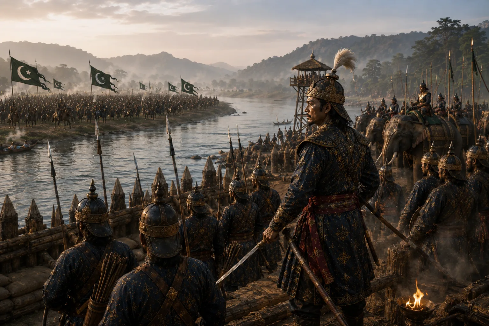

Repulse of Early Bengal Sultanate Invasions
1527–1531 · Swarganarayan’s kingdom

Ahom armies defeat Bengal Sultanate commanders Bit Malik and Mit Manik in naval battles, capturing artillery and cavalry horses.
Sources have not yet been catalogued for this record.
People: Bit Malik, Konseng Barpatragohain, Suhungmung (Swarganarayan)
Open this scene in the interactive archive · Follow this event on MAP